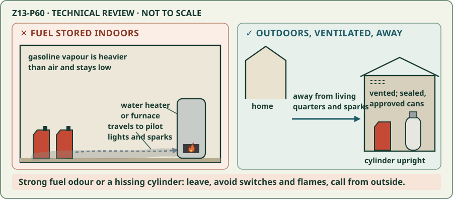

Z13-P60 · Home survival and utilities · New manuscript
Store gasoline, propane cylinders, and kerosene strictly outside living quarters
Prevent catastrophic vapor explosions and toxic fumes by keeping backup generator and heater fuels isolated outside homes and basements.
When it applies · Households storing spare gasoline, 20-lb BBQ propane cylinders, 1-lb camp cylinders, or 1-K kerosene for emergencies.
Equipment · UL/OSHA-listed color-coded safety fuel cans (red=gasoline, blue=kerosene, yellow=diesel), ventilated locked outdoor shed/cabinet, and fire-code volume limits.

Actions
- Store gasoline, kerosene, and ALL pressurized propane cylinders (both 20-lb tanks and 1-lb green cylinders) STRICTLY OUTSIDE living spaces—NEVER inside basements, bedrooms, closets, or near water-heater/furnace pilot flames (heavier-than-air fuel vapors creep along floors and explode upon reaching ignition sparks).[U24, U04, U03, C15]
- Use ONLY approved, tightly sealed, properly color-coded safety fuel containers within local residential fire-code volume limits, kept upright in a cool shaded ventilated outdoor shed or exterior storage cabinet out of children's reach.[U24, U04, C15]
- Date fuel cans clearly, add fuel stabilizer per label if storing gasoline seasonally, rotate old fuel into vehicles every 6 to 12 months, and discard rusted, dented, or leaking propane cylinders safely via certified exchange/hazmat facilities.[U04, T12]
Failure recognition · Storing three five-gallon plastic cans of gasoline and two spare 20-lb propane tanks in a basement mechanical room next to a gas furnace.[U04, U03]
Verify · Confirm zero fuel cans or propane cylinders inside living spaces/basements, upright outdoor ventilated storage, and color-coded dated cans.[U04]
Stop or change course · For a strong fuel odor, active leak or hissing cylinder, leave the area. Avoid switches, engines and flames. Call the fire service or supplier from a safe location. Do not move a leaking cylinder yourself.[U11, U04]
Evidence and editorial notes
- C15 · NPS · Wildland Fire Safety (current web edition)
- Section: Wildland Fire Safety > Campfires and Stoves · Conditions: Outdoor cooking with portable liquid or canister stoves
Support: Operate stoves on level cleared ground away from tents and dry fuels, cool completely before refueling, and move away from any spilled fuel before lighting.
Limitations: Fuel canisters behave differently in cold weather and high elevation; follow manufacturer limits. · Conflicting evidence: None; aligns with CPSC-C and USFS-FIRE.
Editorial note: Governs stove setup, refueling isolation, and spill failure recognition. · Specialist reviewer: Portable appliance safety and fire prevention
Primary source · checked 2026-11-24 - T12 · FEMA / Ready.gov · Build a Kit (current web edition)
- Section: Build a Kit > Basic Disaster Supplies Kit and Maintenance · Conditions: Overnight and multi-day emergency readiness
Support: Assemble water, food, light, NOAA/battery radio, first aid, whistle, local maps, sanitation, medications, and backup power; inspect expiration dates and batteries regularly.
Limitations: Standard 72-hour kits do not cover extended multi-day isolation without replenishment or specialized cold/medical items. · Conflicting evidence: None; links kit readiness to periodic maintenance checks.
Editorial note: Supports equipment readiness, inspection, and overnight-emergency cards. · Specialist reviewer: Emergency management and field readiness
Primary source · checked 2026-11-24 - U03 · NFPA · Heating Fire Safety (current web edition)
- Section: Heating Equipment Safety > Space Heaters, Fireplaces, and Clearances · Conditions: Residential winter heating and supplemental backup heating
Support: Maintain at least a 3-foot clearance between anything flammable and any heating source (space heaters, fireplaces, wood stoves), inspect chimneys annually, use only the fuel specified by the heater manufacturer, and never use kitchen ovens to heat homes.
Limitations: Unvented fuel-burning heaters also create severe carbon monoxide and indoor air hazards; local building codes govern installations. · Conflicting evidence: None; aligns with CPSC-C and READY-HOME-F.
Editorial note: Grounds safe supplemental heating clearances and stop boundaries in Z13. · Specialist reviewer: Fire safety and licensed HVAC trades
Primary source · checked 2026-11-24 - U04 · FEMA / Ready.gov · Home Fires (current web edition)
- Section: Home Fires > Smoke Alarms, Fire Extinguishers, and Escape Plans · Conditions: Residential fire prevention during outages and supplemental heating
Support: Test smoke alarms monthly on every level and outside sleeping areas, keep two exits clear from every room, store fuels outside living spaces in approved containers, and evacuate immediately if a fire exceeds incipient containment.
Limitations: Candles and improvised indoor flames dramatically elevate outage house-fire deaths. · Conflicting evidence: None; integrates with CPSC CO-alarm rules (C09).
Editorial note: Anchors outage fire prevention, fuel storage, and exit readiness in Z13. · Specialist reviewer: Fire prevention and residential safety
Primary source · checked 2026-11-24 - U11 · U.S. DOT PHMSA · Pipeline Leak Recognition and What to Do (Current web edition)
- Section: What to DO; What Not to Do · Conditions: Suspected gas or pipeline leak
Support: Leave the affected area and call 911 and the provider from safety. Avoid spark sources and leave valve and restoration decisions to authorized responders.
Limitations: Do not transpose outdoor hazmat sheltering directions to a gas leak inside the dwelling. · Conflicting evidence: See A02 claim audit for boundaries.
Editorial note: Establishes strict utility-leak evacuation and licensed restoration gates. · Specialist reviewer: Gas utility safety and fire service
Primary source · checked 2026-11-25 - U24 · CPSC · Consumers Warned Against Storing Gasoline (news release) (July 30, 1979)
- Section: Consumers Warned Against Storing Gasoline (news release, July 30, 1979) · Conditions: Household gasoline storage
Support: Gasoline vapors are heavier than air and can travel to ignition sources such as pilot lights in stoves and furnaces. Keep storage cans outdoors, far from living quarters and ignition sources, such as in a well-ventilated shed; never store gasoline in the house or a vehicle; keep sturdy, tightly sealed containers.
Limitations: 1979 release; its container-material advice predates current approved safety cans. Does not address propane or kerosene. · Conflicting evidence: None.
Editorial note: Grounds the Z13-P60 vapour path and outdoor storage location. · Specialist reviewer: Fire prevention and hazardous-materials safety
Primary source · checked 2026-11-25
Source lineage · FEMA Home Fires and NFPA Heating Safety; new manuscript · Classification · New manuscript.